我们这个行业，无论你说是战略，是策划，还是咨询，归根结底都是要靠创意，还要靠手艺。没有创意，策略等于 0 ；有了创意，手艺不精，做不到位，还是等于 0 。这就是华板常说的：“定位可以抓盲盒，抓到哪道题，我们都可以做。但是，如果没创意、没手艺，就没有行动，多好的定位都是白干！”全球品牌需要全球符号、大众品牌需要大众符号，那么高端品牌就需要高级符号。如水坚果项目，就是华与华高端品牌打造的代表案例，以精湛的创意和手艺创造出高端坚果品牌。两年时间通过品牌战略、产品开发、超级展会等品牌服务，开辟如水高端品牌事业全新道路。帮助如水从坚果市场，迈向烘焙及礼品市场，开辟出超 1 . 5 亿的新事业版图，实现两年在疫情情况下逆势增长 16 %。本期文章，我们将从以下 5 个方面，为你分享华与华用高级符号，打造如水高端品牌的过程：
- 高端品牌需要高级符号，超级手艺建立竞争壁垒；
- 超级包装建立如水高端品牌认知；
- 找到第二金角产品，开发烘焙新市场；
- 开发高端礼盒，进军礼品渠道，拉出企业第二增长曲线；
- 打造如水高级品牌道场，助力拓展经销商客户。
项目背景：如水坚果 2021 年 4 月正式与华与华开始合作，合作之后我们了解到，张总做坚果炒货生意已经 30 年之久。最开始以卖散货为主，后面通过产品包装创意，模仿 VOSS 矿泉水，将坚果装到大圆桶里，普通的散货卖到了北京的王府井，从此开启高端坚果品牌的发展之路，也奠定了如水的高端基因。目前在 Ole 、盒马、久光、金鹰等上千家精品超市销售，在业内被称为坚果中的劳斯莱斯。我们在高层访谈中了解到，张总一直想把如水品牌打造成走亲访友年节假日一种文化现象，比如月饼点心烟酒茶。他跟我们说：“我不和任何人比，我只希望如水有品牌感，让人们都认为如水坚果拿出来有面子。人们到商场转一圈，除了买两条烟两瓶酒，再买个如水坚果送礼，这是我想要的。”做高端的品牌一直是张总的目标和梦想，但在寻梦的路上，张总走过不少弯路，品牌形象和产品包装也一直在不断的变化。张总给我们分享过：早期他们设计的一款把产品遮挡住的黑色包装，很多销售员要把标签藏起来，只露出坚果，说只有这样才能卖的出去。很多消费者买如水产品很多年了，但却不知道自己买的是“如水”牌坚果，产品销售出去了，但消费者却没有记住品牌。
如水坚果早期包装
如水面对的核心问题，就是“有高端品质，无高端品牌”。在消费者心中还远远没有建立起品牌认知和品牌资产。如何通过品牌战略释放如水坚果高端的产品价值？如何为如水建立起一战而定的品牌顶层设计？这是摆在项目组面前的首要课题。
1高级符号打造高端品牌大家都知道华与华的超级符号，那什么是高级符号？高级符号其实就是超级符号的一种，而且是更高级的那一种。
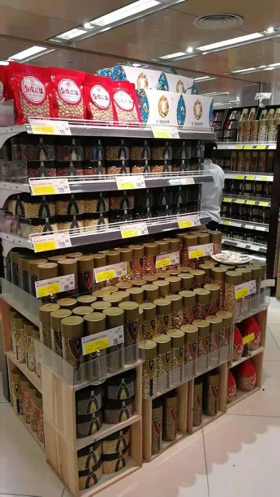
打造品牌其实就是符号编码的问题，这就涉及到华与华的超级符号理论：一切传播都是符号的编码和解码。超级符号是人人都能看懂的，并且听他指挥的符号，将品牌嫁接超级符号，能在一夜之间让一个新品牌成为亿万消费者的老朋友，并建立品牌偏好，发动大规模的购买。编码怎么样来编？我们用华与华超级符号哲学模型来说明。
在人认知的最底层，有一个东西叫知觉框架，知觉框架就是信息处理。现在所谓的人工智能，比如 Chat GPT ，说建了一个大语言模型，实际上就是模拟了人的知觉框架。知觉框架把接受的信息，处理提炼形成经验，先验主义哲学认为“人的一切知识都是从实践中来的，我们从实践中得到经验，然后形成经验秩序，在经验秩序之上是人们的集体潜意识。我们在编码的时候，就是从文化母体中寻找超级符号，制作预制件，如果你编织出的东西符合人的经验秩序，那它也就能轻而易举地进入大众的经验秩序。并且一旦组装，它就无法卸载，从而发动大规模传播。相反，如果你做了一个谁也没见过的东西，跟所有人的经验秩序都不一样，那他就就膈应，他就有排异反应。打造如水超级符号，一举建立如水高端品牌资产我们要做一个高端坚果品牌，怎么去介入人们的经验秩序和集体潜意识呢？在华与华，不管是超级符号还是品牌谚语，我们都希望它是来源于文化母体的“预制件”编织而成的。
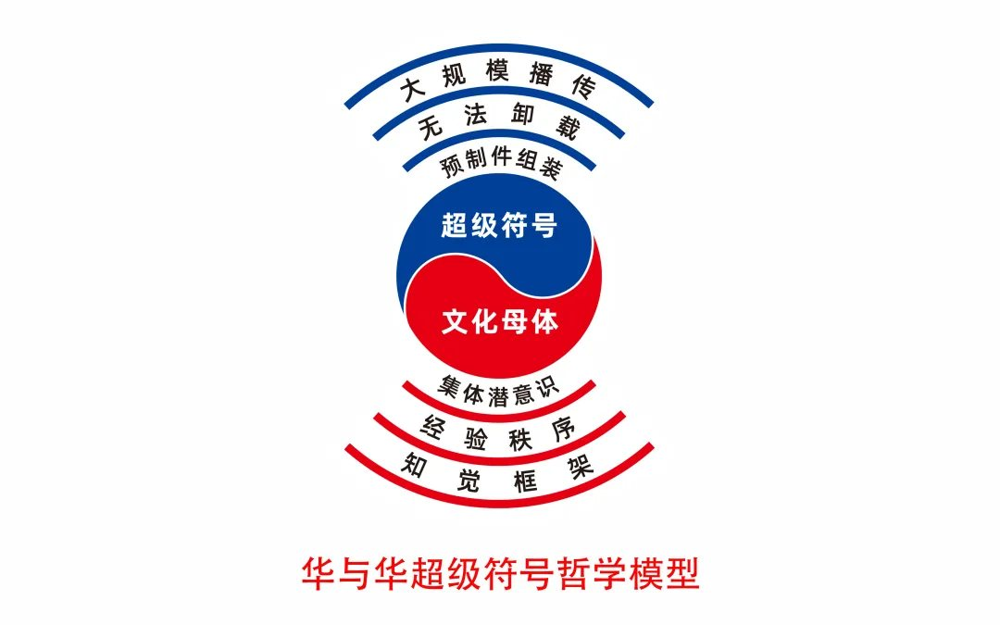
所以，首先在文化母体上面我们选择了松鼠，因为松鼠就是能代表坚果的动物符号！
行业内还有另外一个知名品牌，已经使用了松鼠形象，可能就有人认为不应该再使用松鼠了。还是那句话，没有什么东西是能被占领的，策略是个多选题，创意也同样可以用不同的技法实现不同的区隔，这都是基于企业本身的问题，为了达到不同效果而选用的不同姿势而已，关键在于创意。什么符号能符合高端的经验秩序？我们选择了皇室的符号和版画的画风，而在皇室的符号中，公爵形象最具贵族特性，蕴含着皇室贵族的文化原力。一身帅气威严的军服，便是贵族价值最好的体现。
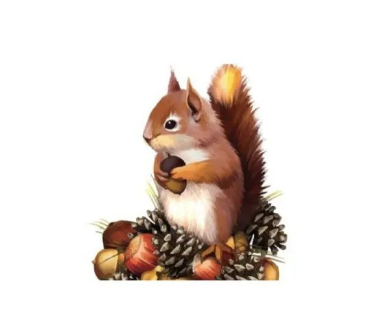
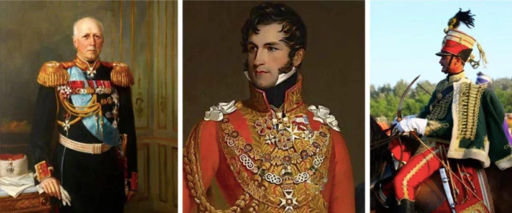
版画风格是在中世纪贵族中流传的风格，具有典雅、庄重的特性， 16 世纪的丢勒版画大师，用铜板和木刻复制钢笔画。到 17 世纪，伦勃朗把铜版画从镂刻发展到腐朽方法，并进入创造版画阶段。松鼠公爵形象+版画画风，就此如水坚果超级符号“如水松鼠公爵”就诞生了。
如水松鼠公爵的超级角色和鸢尾花菱形格超级花边，这就是超级符号，而且是整个品牌的符号系统。我们都是使用标准件来进行编织，松鼠是现成的，公爵的形象是现成的，法国国花鸢尾花，还有菱形格都是现成的，整套预制件的组装将欧式贵族风格展现的淋漓尽致。
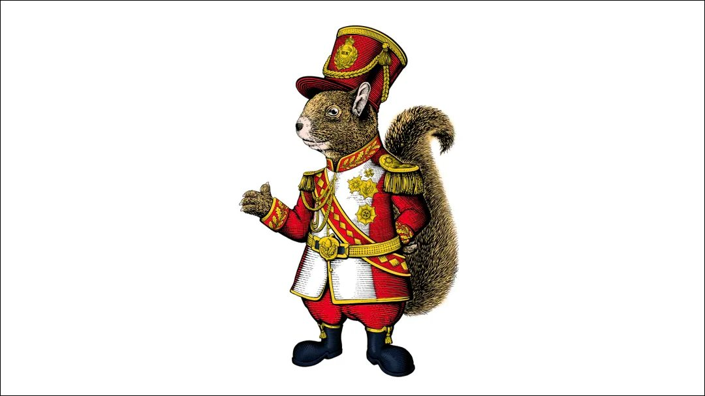
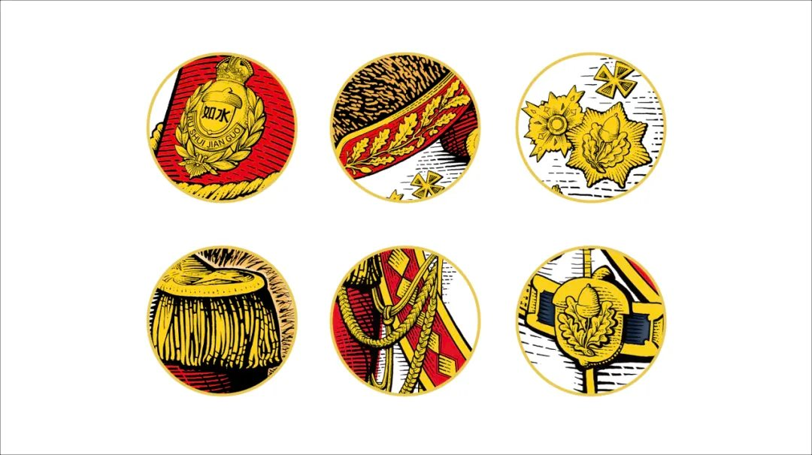
超级手艺建立竞争壁垒版画画风模仿壁垒极高，形象推出的第二个月市场就有品牌对如水进行模仿，但看到包装后我们啼笑皆非，背后的本质其实就是如水通过超高超的插画手艺建立起极高的竞争壁垒。即使你模仿了这个创意，但是没有这个手艺也是无法实现的，这也就是我们选择最高难度的版画风格来进行创作的原因。
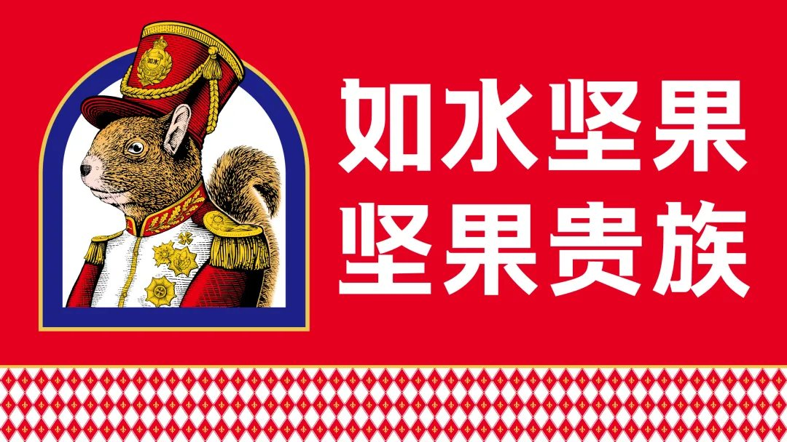
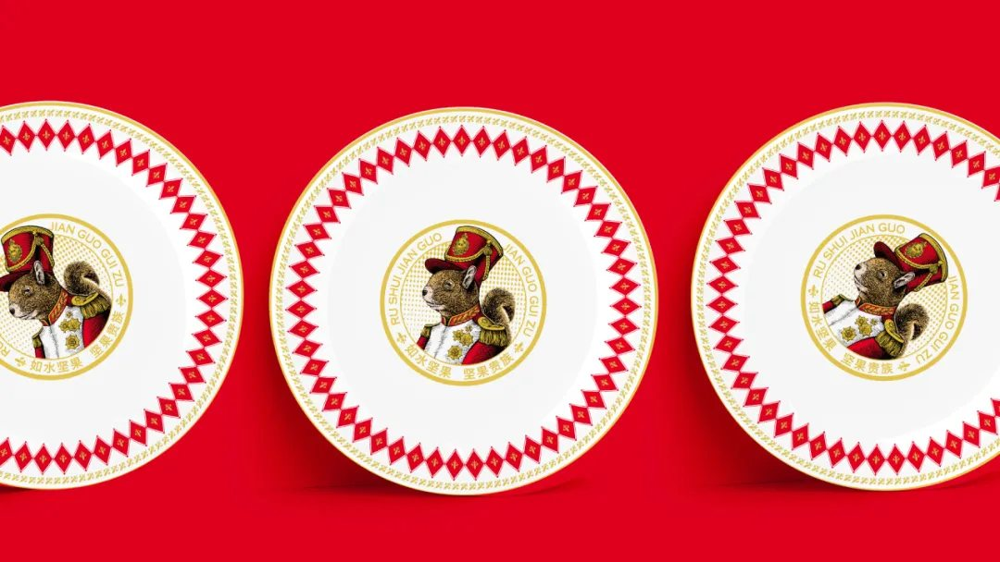
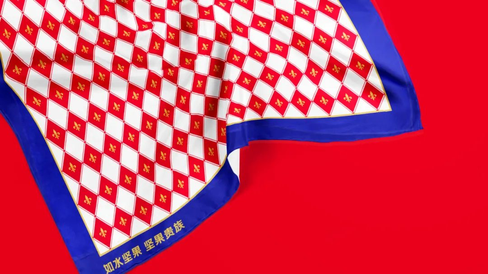
模仿如水坚果的竞品
我们为如水坚果创作的作品，呈现出了丰富的细节和精致的线条，这种精密的处理赋予了版画以贵族感。而且版画的高端感则源于其绘制过程的复杂性，插画师必须有精湛的技能和创造力来应对挑战，一个成功的版画创作可以称之为一件艺术品。如水的版画创作可以分为七个步骤：创意草稿、线稿明暗区分、标准排线平均、阴影反白、光源断线、整体调整细节完稿。
- 创意草稿主要以创意为主，帽子和衣服上都彰显了贵族符号的细节。
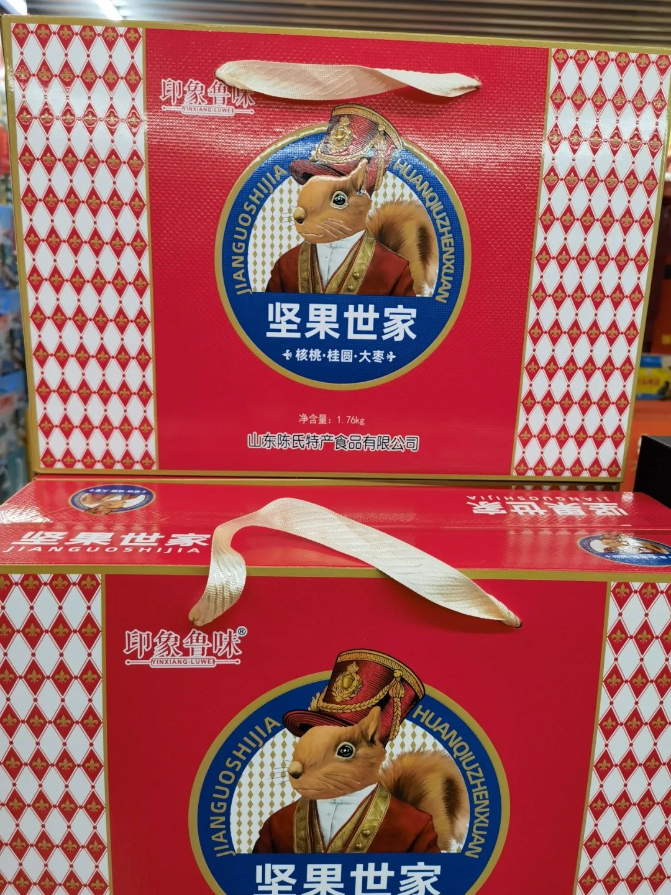
- 绘制线条加明暗区分，让松鼠轮廓完整。
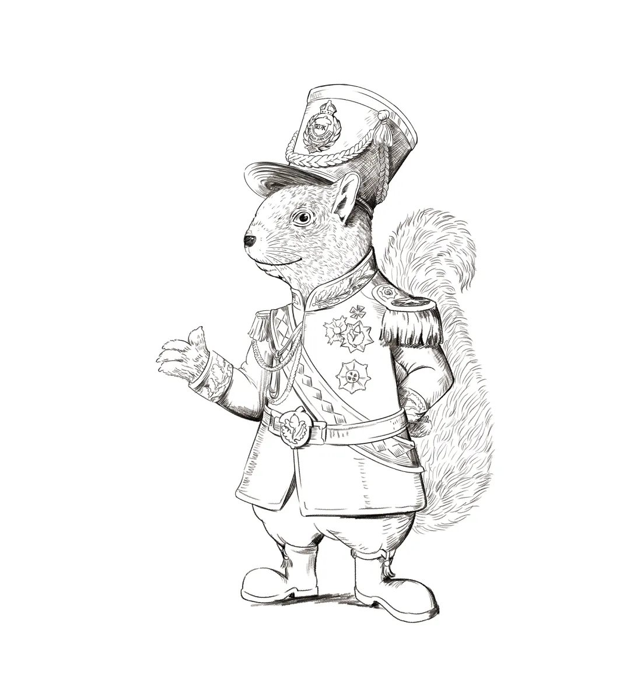
- 根据松鼠特性排线。
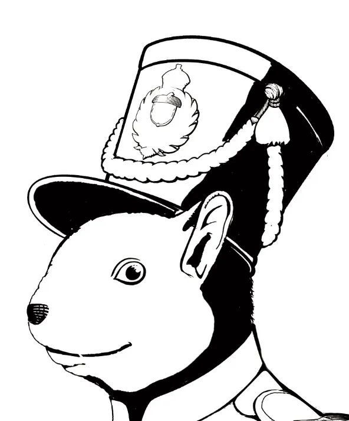
- 高光做留白断线处理。
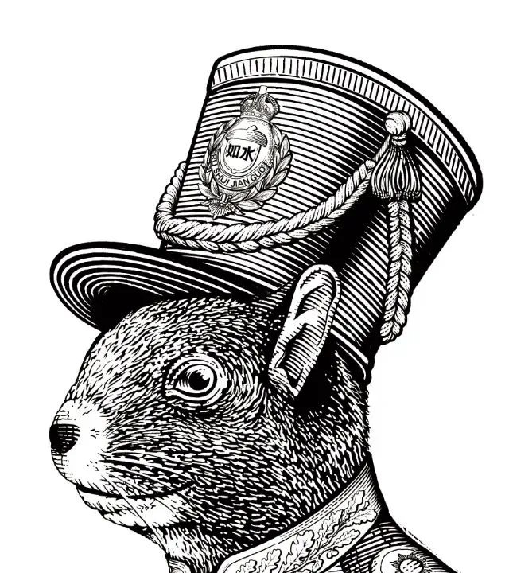
- 背光面也需要做反白断线处理，技法上才透气。
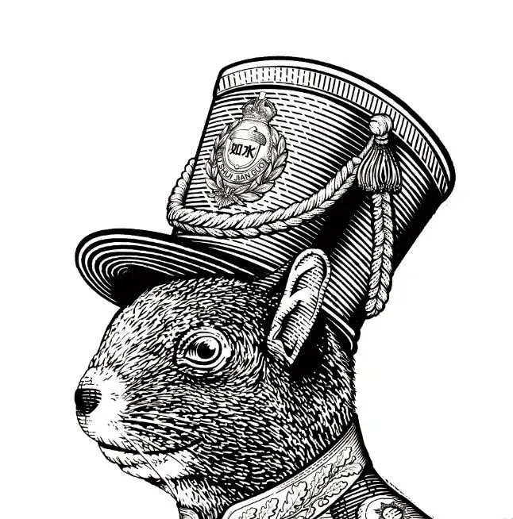
- 处理整体线条粗细、线条均衡、空间层次、主次关系和黑白灰之间的关系。
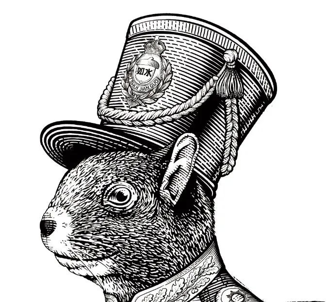
- 配色整体使用如水品牌色正红色和正黄色，加上松鼠固有颜色，一幅画整体用 4 到 5种颜色是最经典的配色。
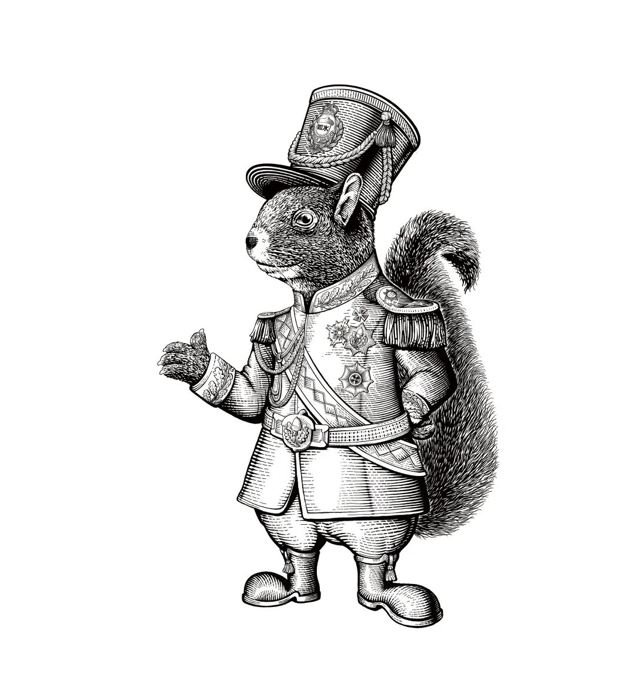
品牌修辞学打造品牌谚语华与华的两大核心技术：符号的技术（超级符号），和词语的技术（品牌修辞学）。可以说符号的编码大部分都是在讲图形的编码，但其实世界上最大的符号系统是语言系统，对于语言符号的编码，我们就把它称为修辞学。亚里士多德说：修辞学是让人相信任何东西以及促使人行动的语言艺术，修辞是天才的活计，但是也可以被学习。关键是 4 条，第一普通的道理，第二简单的字词，第三有节奏的句式，第四使人愉悦。如水产品在高端市场，坚持高端品质，如何运用好修辞学创意品牌谚语，释放如水高端的价值？直接使用“高端” 的品牌已经太多了，消费者已经有了审美疲劳。那还有哪个词更能释放如水高端的品牌价值呢？最终我们找到了一个可以最好的诠释高端的超级词语——“贵族”，为如水创意了“如水坚果 坚果贵族”的品牌谚语。
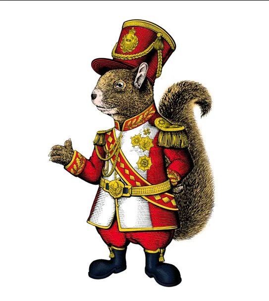
贵族是形容最高级、能量信号最强的超级词语，比如劳斯莱斯是贵族汽车，百达翡丽是贵族手表，香奈儿贵族箱包。同时贵族也是口语化的表达，比如单身贵族等。广告就是掷地有声的断言，形成刺激反射，形成购买。“如水坚果 坚果贵族”这句话极具能量，更是无差别秒杀其它高端坚果产品，树立高端品牌价值。有了这句话，品牌战略定位才有了答案，最后的临门一脚才算精准踢进洞。超级符号和品牌谚语是塑造了如水高端品牌的调性和品牌的风格。大家可以看到，如水所有的故事、所有的文化都是围绕贵族的文化、皇室的符号来创意。从礼盒的插画、礼品的包装到如水的展馆、展会，都是体现高端品牌的符号体系和话语系统。超级符号、品牌谚语也塑造了如水品牌的风格和品牌的调性。
如水松鼠一家人版画
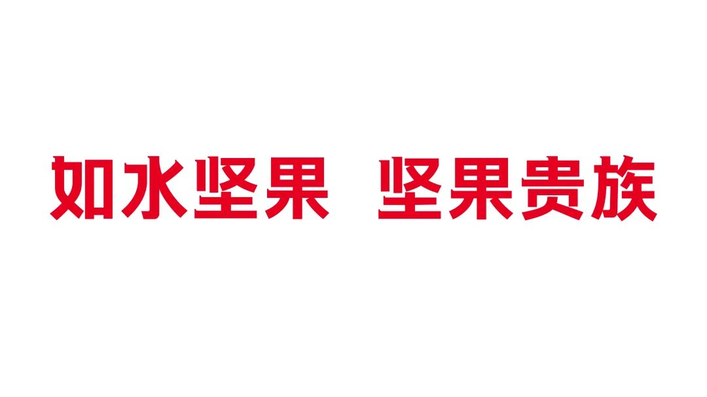
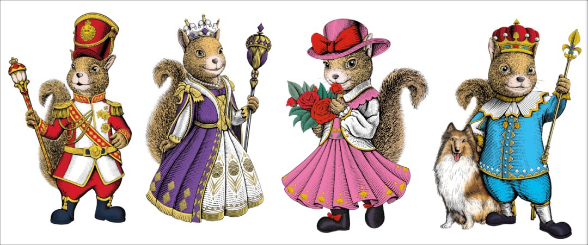
如水松鼠公爵拿破仑版油画
如水松鼠贵族一家人油画
阶段 2
超级包装建立高端品牌认知
还记得如水的客户们第一次见到品牌形象的时候十分动容，张总激动的说：这就是我们一直在找，找了 20 年也没有找到的东西，今天来华与华我的事就成了。超级包装建立如水高端品牌认知企业增长战略本身就是产品战略，企业通过产品的推出来推动销量增长和市场的开拓，而华与华又通过中国最传统的围棋模型来将企业增长路线可视化。战略就是下围棋，金角银边草肚皮。金角占据制高点，银边拉出包围圈，镰刀收割草肚皮，天下归心成大局。
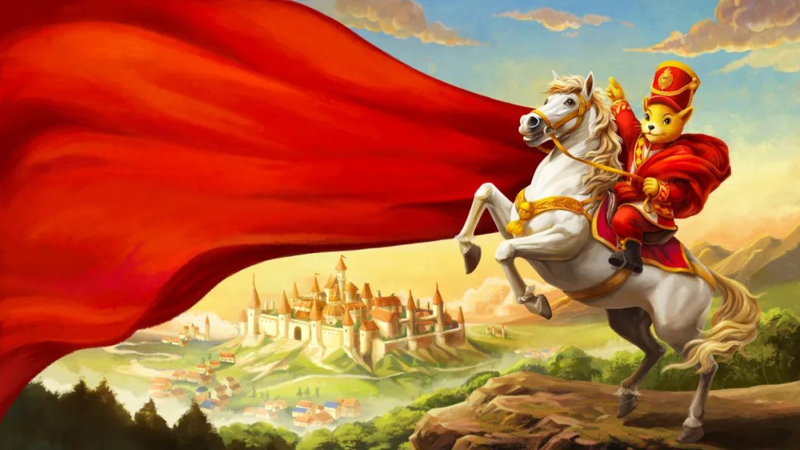
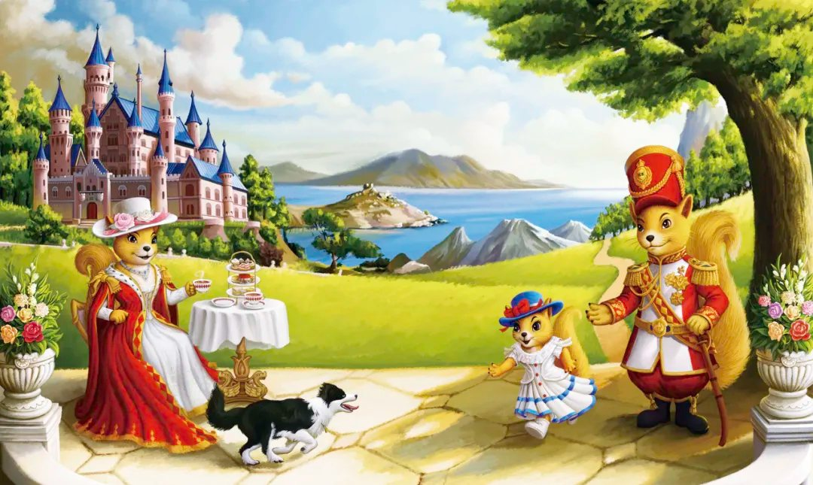
第一步改造如水金角产品——如水坚果大圆桶，点出第一只金角，建立高端品牌认知。这其中的决胜关键就在包装设计，一年卖出 1 亿个包装就有 1 亿个免费的广告位。而如水之前的大圆桶包装没有提供有效的产品信息，也无法释放高端产品价值。那如何通过一个包装，在货架上能够让如水建立货架优势，同时又能让产品自己会说，把自己卖出去呢？
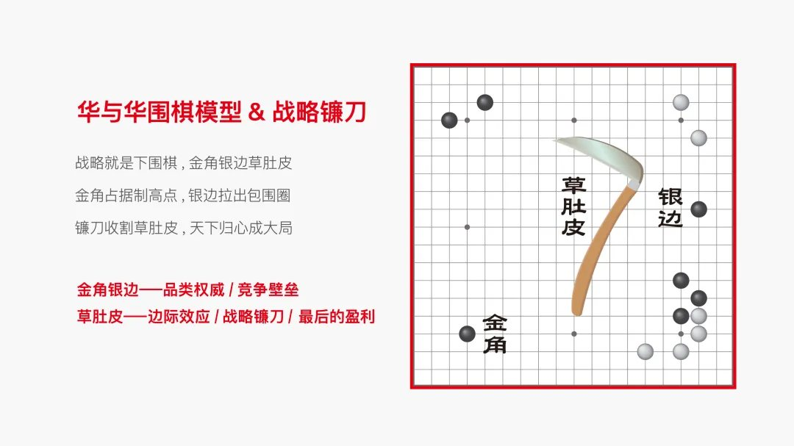
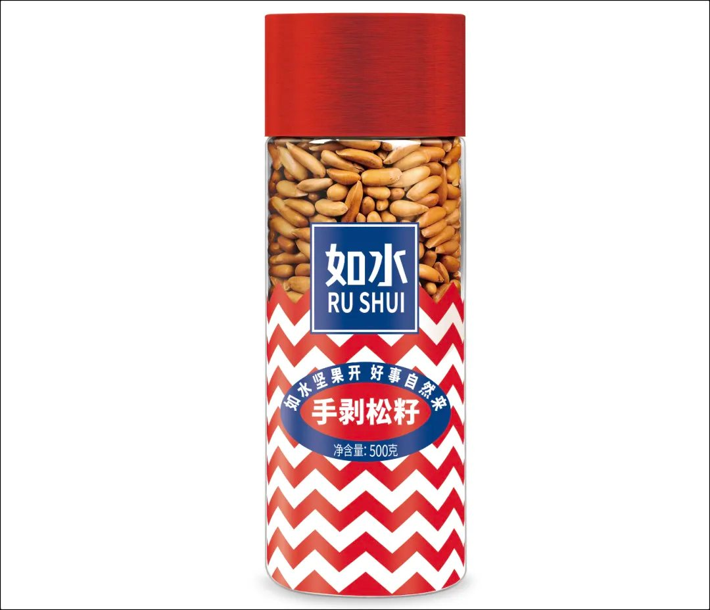
如水坚果大圆桶原包装
华与华的包装设计，从来都不是坐在办公室里空想，华与华坚持“三现主义”做包装。“三现”即现场、现物、现实。一切答案都在现场，当你走到现场，看到现物，看见发生的现实，创意就会向你走来。在现场观察每一位消费者从经过货架、注意货架、上前询问、试吃，再到最终购买的全部过程。并且要在现场自己当促销员去卖货！这是我们华与华人的做事规矩：一定要凡事彻底！
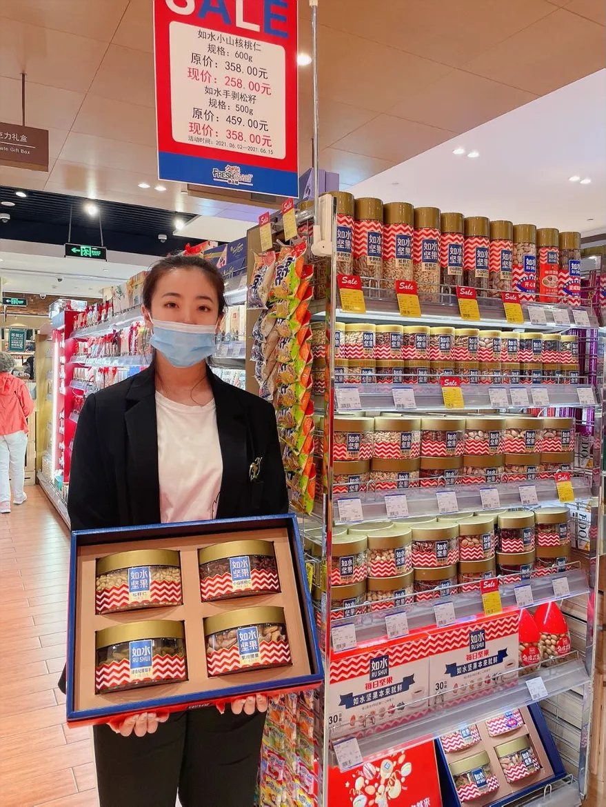
华与华策略师在客户终端卖货
我们 48 小时不间断地定点观察，记录了 19 位真实消费者 361 句对话。发现消费者关注的问题 Top4 分别是价格、日期、口感、产地。其中 47 %关注价格； 37 %关注日期和口感； 26 %关注产地。这也就说明 3 个人中就有一个人会问到日期的问题， 4 个人中就有 1个人会问到产地，但这些并没有在包装中充分释放。我们了解到如水的坚果全球黄金原产地直采更高等级坚果，像巴基斯坦的手剥松子，年产只有 300 吨，十分之一都被如水采购。另外我们也了解到如水内部实行 3090 原则，鱼皮花生出厂只卖 30 天，坚果出厂只卖 90 天。终端日期更新鲜，产品更有竞争力。消费者关注生产日期，但大多数包装的生产日期位置和颜色都不明显，要在包装上翻来覆去找好久才能找到。这也是消费者购物中的一大痛点。消费者关注什么，我们就在正面展示什么，我们重新规划包装信息服务，将消费者最常问的、对产品最关心、导购需要频繁回答的问题答案置于包装之上。修改后的包装品种命名、生产日期和产地信息清晰可见、一目了然。如水坚果大圆桶包装设计六大机关，释放贵族品牌价值：机关 1 ：如水坚果放 C 位，行业属性要占对命名是产品包装第一位，把如水坚果放在产品包装 C 位，让消费者一眼看到。在消费者心中形成“如水=坚果”的品牌认知，同时将我们的话语“如水坚果 坚果贵族”放在品牌名下面，释放如水就是贵族坚果的品牌价值。
机关 2
超级角色来站台，品牌赋能做起来
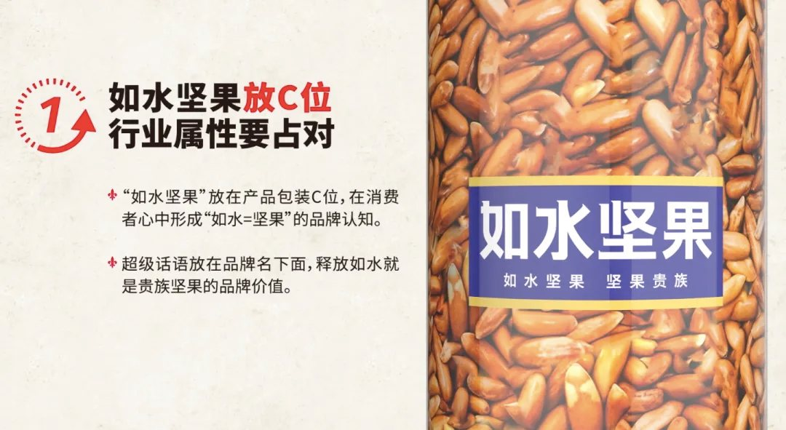
我们的超级符号身穿皇家爵士服，胸前排满勋章，头戴贵族爵士帽，威风凌凌站在包装上，想不卖货都不行。超级符号+品牌话语这一整个符号所占面积是之前的 2 倍，货架上更容易被发现。获得终端陈列优势，提高产品在货架被发现的机率。
机关 3 ：贵族花边铺包装，终端陈列阵列强皇室菱形格加上法国国花鸢尾花，红色的菱形格，形成整齐的阵列感，在终端更容易被发现。用超级花边占领货架，不是一个个占领，而是一排排占领。
机关 4 ：产品命名要明显，产地信息跟上前。
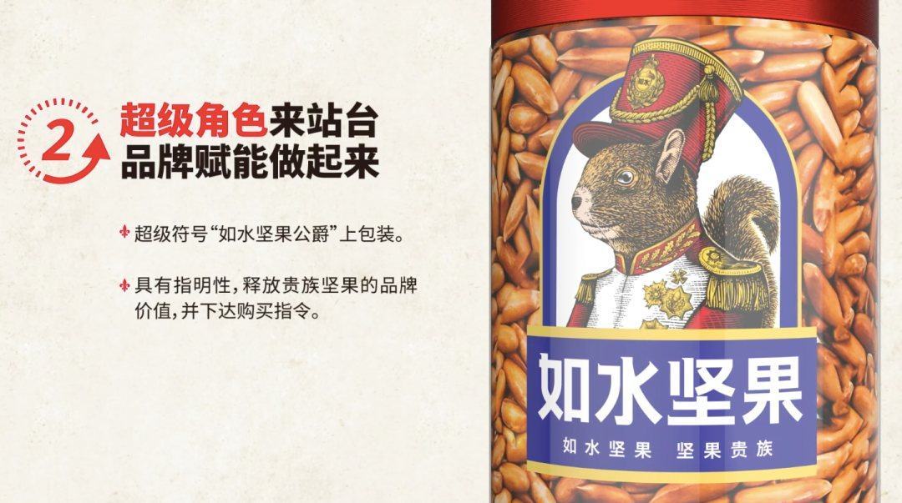
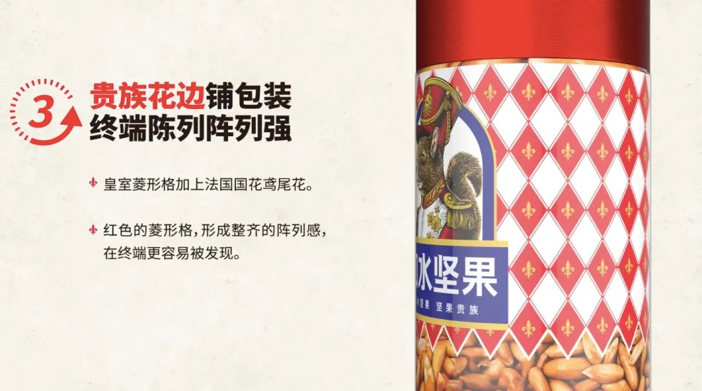
机关 5 ：生产日期放正面，产品新鲜更凸显。
机关 6 ：品牌谚语放瓶盖，品牌资产再积累包装即媒体，包装是重要的广告位，顶部重要位置重复如水的超级话语！传播的本质，就是重复重复再重复！重复就是天机！
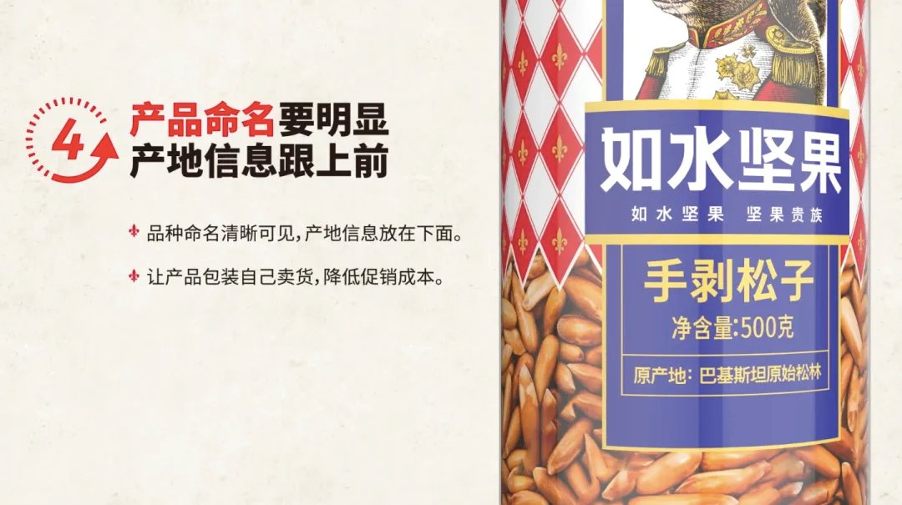
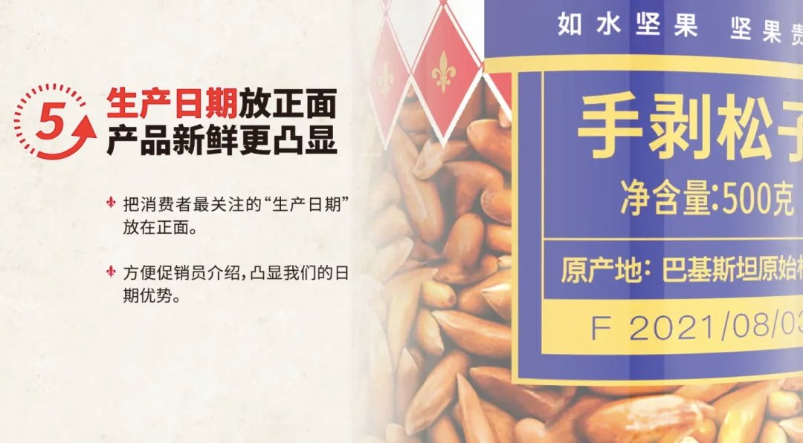
商品即信息，包装即媒体，产品=购买理由+使用体验，产品的本质是购买理由。一个包装，机关算尽。高级印刷工艺成就高级包装当有了创意和手艺就能万事大吉吗？当然还不够。没有创意，策略等于 0 ；没有手艺，创意等于 0 ；没有执行，一起还是回到 0 。对包装设计，我们的设计师不是发了文件就算了，而是一定亲自到印刷厂跟色。“子要亲生，田要亲耕。”一定要自己到现场！
如水坚果公爵是我们首次采用版画的形式表现的超级角色，想要在一张小小的标签上体现版画松鼠公爵丰富的细节对印刷技术的要求非常高。松鼠的毛发细节丰富，容易印糊了，毛发都黏在一起，没有细节，也容易印不实，像一只掉毛的松鼠。
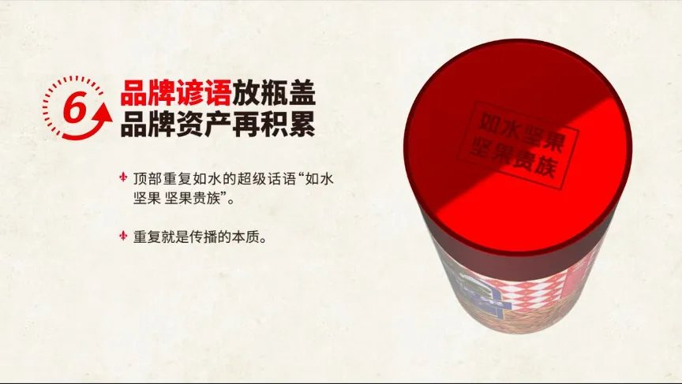
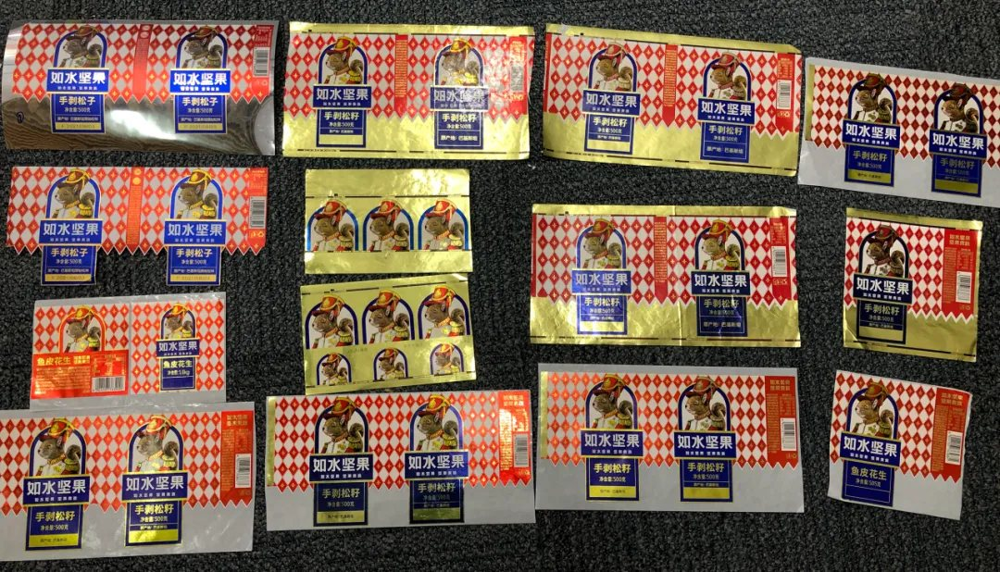
大家可以看到，如水的包装为什么有那么好的质感。因为仅仅在这一个包装上就要历经2 周时间， 20 次不同材质不同效果的打样测试。凡事彻底，制作精良！成功不是做不平凡的事，而是把平凡的事做彻底，做到不平凡。
印刷材料的选择，让标签有金子的质感，更显贵气。在开始打样前，我们首先遇到的问题是用什么样的材质来印刷标签。明确材质要基于我们想达到什么效果。对于如水松鼠公爵，我们要的效果就是“贵族”气质。为了让包装看起来更加“贵气”，我们在设计时，就把松鼠公爵的勋章和帽徽部分，还有鸢尾花的符号，填充成了金色，让它们散发金子的质感。最终选择了金卡纸不干胶作为标签的材质。
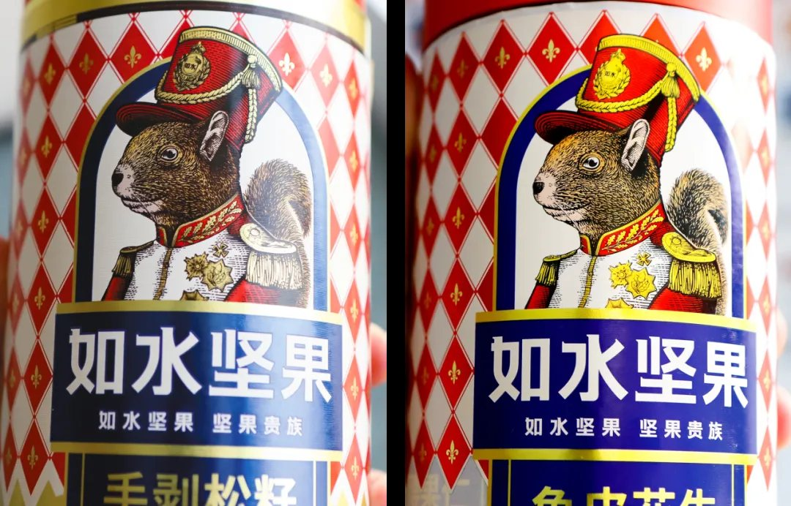
提升金卡纸的质感，让金卡纸的颜色更加金黄。当我们采用金色卡纸直接印刷时，可以发现，露金印刷后的金色，虽然是闪闪发亮，但是这个金色偏淡，不像金子的颜色。露金印刷并不能直接达到我们想要的效果，这时的处理方法是，需要在露金的部位加上黄墨，让金色部分更加金黄。我们根据打样的效果，反复测试，最终我们测定，需要在露金色部分，加 70 %的黄，才能让金色部分的颜色看起来更加金黄，而且还没有影响原来的金属质感。真正做到金光闪闪，拥有金子般的质感。
左松鼠公爵直接露金印刷的效果，右叠印 70 %的黄
在金色卡纸上印刷其他颜色，需要垫白。想要在金卡纸上印刷其他颜色，但是金卡纸原有的黄色会影响其他颜色着色。如果想要不受到金卡纸原色的影响，就必须在金卡纸上面先印白色来盖住金卡纸的底色。
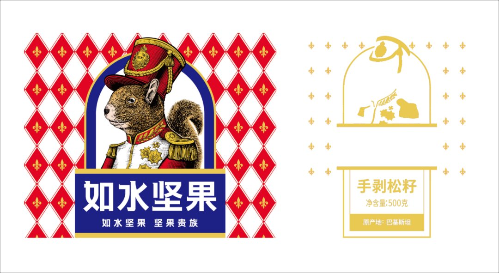
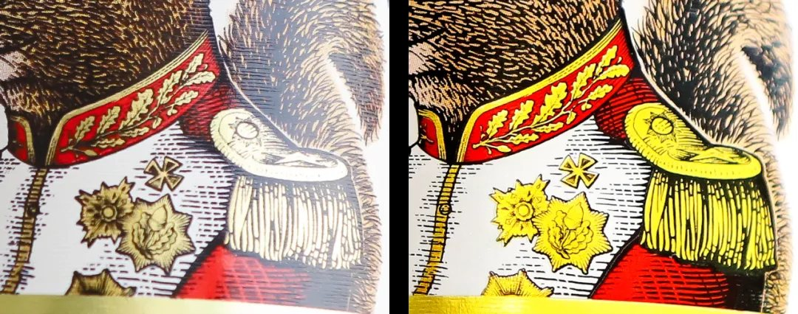
垫白的意思是在金卡纸上印一层或者两层白墨，白墨能抵消金卡纸原色的影响让颜色更准确。但问题是，垫白也会抵消金属质感的效果，让质感变普通。这个问题处理技巧是：我们要先根据最终想要的效果，来决定在哪些位置垫白。
左边蓝色不垫白，右边蓝色垫白
左边红色垫白，右边红色不垫白
大圆桶产品翻新成功后，我们翻新了从小水晶到菱形盒再到袋装全家族坚果果干产品。如水鱼皮花生也是我们重点翻新的一款产品，我们将鱼皮花生做了全国全网销售第一的认证，并上到包装的正反两面，翻新后销售额同比增长 20 %，增收 1300 多万元。全面媒体化成功把产品包材成本转化为品牌投资，第一年一举建立的松鼠公爵的贵族形象，现在去到超市有消费者就会说，去买那个带着红帽子松鼠家的坚果。
阶段 3
找到第二金角产品，开发烘焙新市场

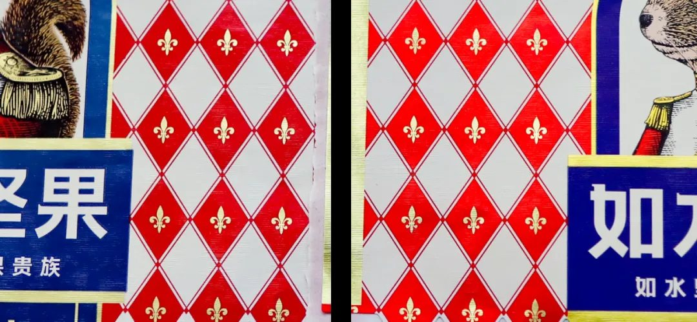
在服务的第二年，我们思考如何突破高端精品超市商市场空间的局限性，开拓更大的事业版图。我们基于企业自身的资源禀赋，和张总在产品开发上敏锐的嗅觉，决定将前期储备的如水黄油小曲奇产品作为第二只金角产品进行开发，由此切入到更大的烘焙市场。开发坚果黄油小曲奇，建立烘培市场起手式首先我们进行 200g 袋装曲奇大单品的翻新，因为 200g 袋装曲奇客单价较低，可以帮助如水撬动全国的大流通渠道，不受高端渠道限制。
如水曲奇产品的开发有 6 大机关：机关一、产品命名，我们从如水黄油坚果小曲奇，改成如水坚果黄油小曲奇，文字先后次序的调整，是我们要占领坚果烘培市场的战略动机而决定的，把坚果两个字放在最前面更具强调性。
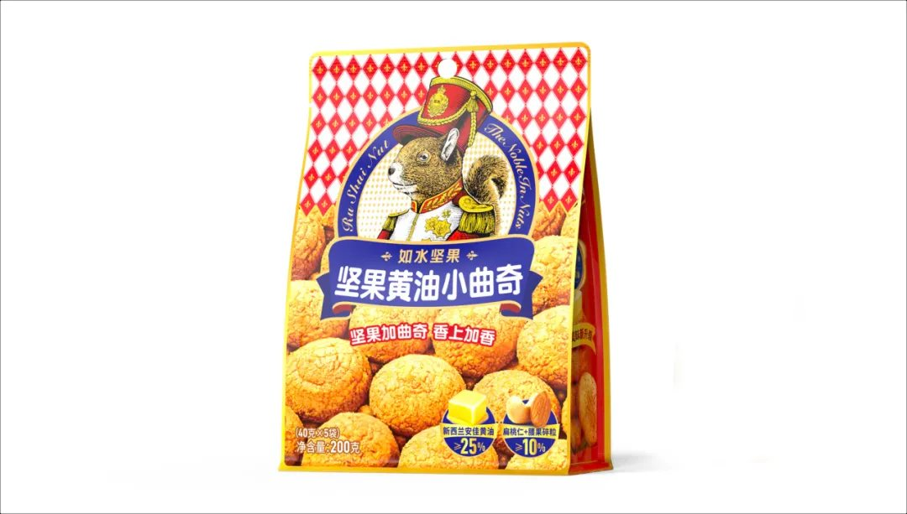
机关二、我们给到“坚果加曲奇 香上加香！”的购买理由。并提炼“新西兰安佳黄油≥ 25 %；扁桃仁+腰果碎粒≥ 10 %；内含 5 袋小袋更保鲜”的话语体系，并把它用 icon 的形式体现在包装上。
机关三、松鼠公爵再放大，货架一眼看到他。将松鼠公爵超级符号放大原先的 1 . 5 倍，视觉冲击力更强，货架优势更明显。
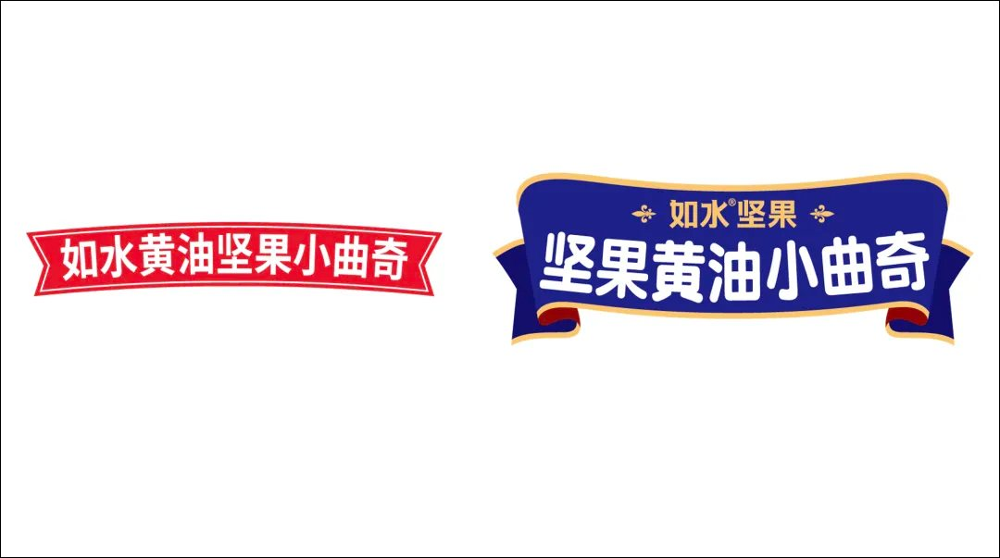
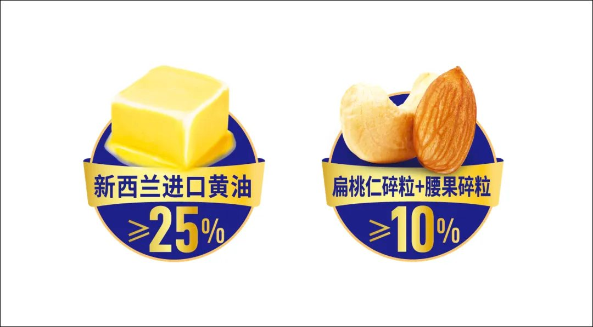
机关四、符号品名连一起，阅读就像滑滑梯。超级符号和品名用丝带的形式组合在一起，阅读更加流畅。
机关五、包装侧面叠曲奇，食欲卖点都集齐。包装的侧面也不能放过，食欲产品图和卖点一应俱全。
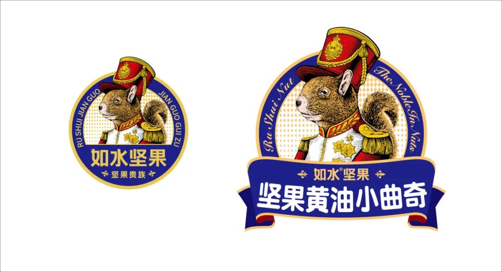
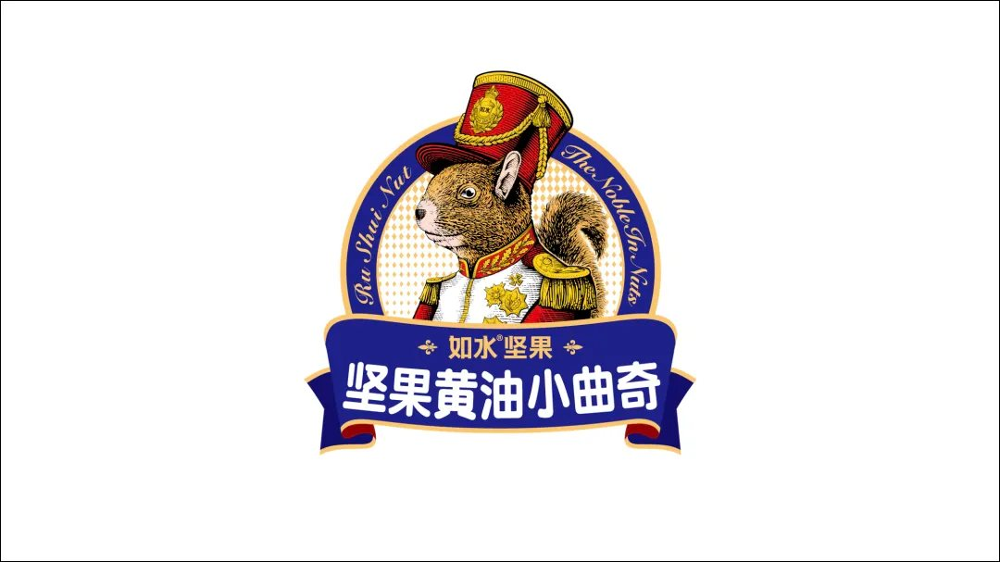
机关六、包装底面加信息，食用指南要说齐。包装底面放上食用指南，提供充分信息服务。
6 大机关充分释放产品的品种价值，让 200g 的曲奇产品放上货架就开卖， 2022 年单品销售超 500 万。同时我们在曲奇产品开发过程中，洞察到礼品市场才是曲奇更大的市场。而我们旧礼盒包装盒的正面面积较小，分量很足但价值感很低，觉得送出去没面子，很难撬动礼品渠道的增长。基于此，新升级的包装同样的体积，我们把它变薄，增大正面的面积，从 320 * 200cm增加到 420 * 270cm ，面积是原来的 1 . 7 倍，新升级的包装一下子就大气十足。
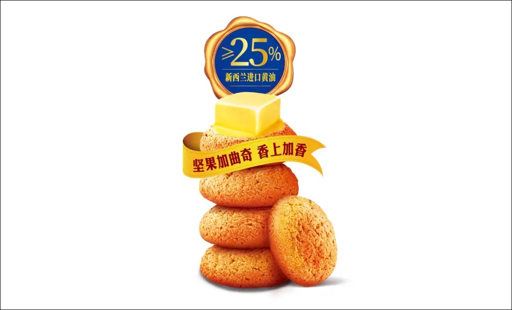
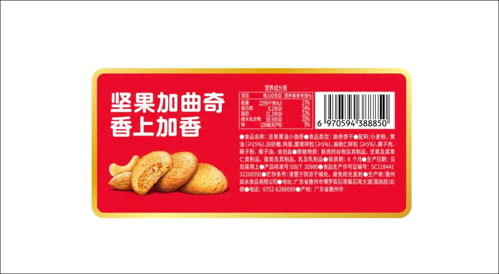
而曲奇礼盒与贵族曲奇礼盒之间，就是一幅贵族油画的距离。在包装的侧面我们寄生了松鼠公爵一家人的油画，品质感直接拉满。这也是我们品牌专属的贵族形象，竞争对手无法模仿。
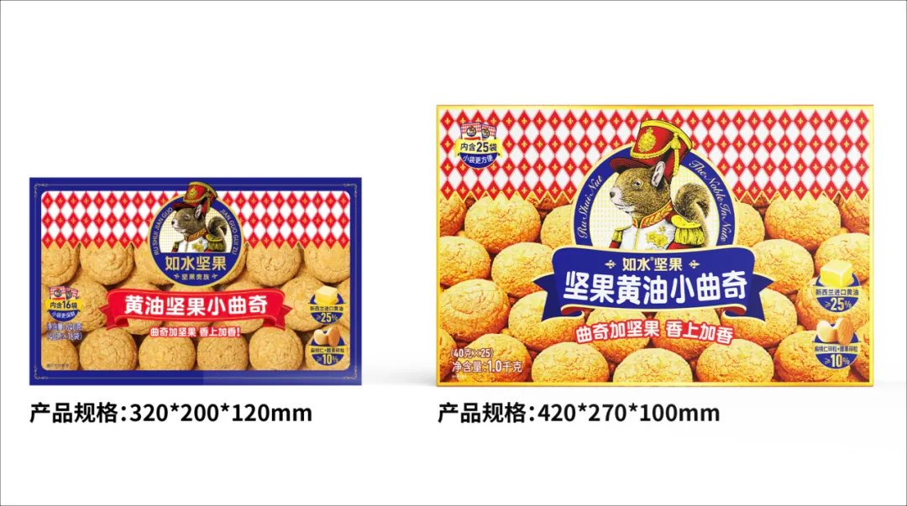
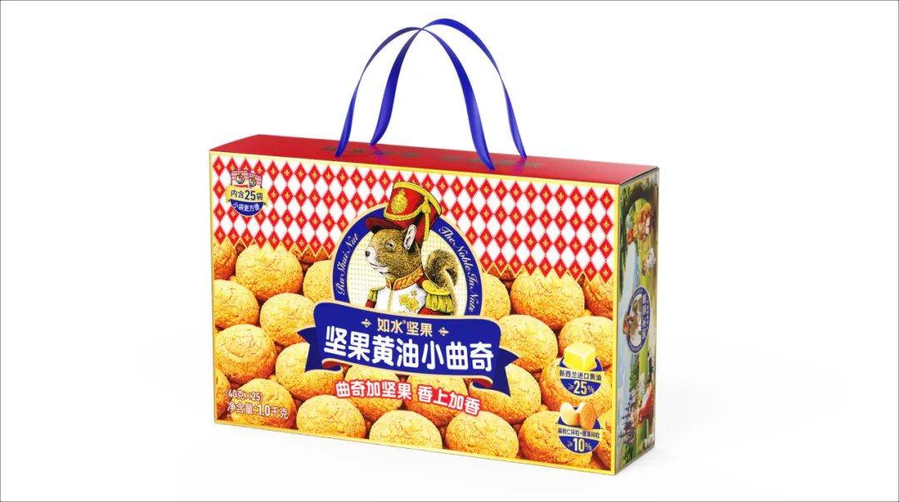
1000g 的曲奇礼盒翻新后，我们为覆盖不同的价格梯队，开发了 560g 的如水红罐曲奇。实现了曲奇产品从 6 . 9 元到 169 元全价格带的覆盖。
曲奇产品上市二年，年销售额超 1800 万。成为继鱼皮花生后第二个过千万的大单品！围绕曲奇烘培产品，我们又拉出了一条全新的银边，布局了如水纯牛奶鸡蛋卷和如水坚果小桃酥一系列坚果烘培产品，烘培产品的成功开发助推如水从坚果食品行业进军到烘培食品行业， 2022 年创收超 3000 万元，增长率 159 %，如水烘培市场已经奠定了稳固的基石。
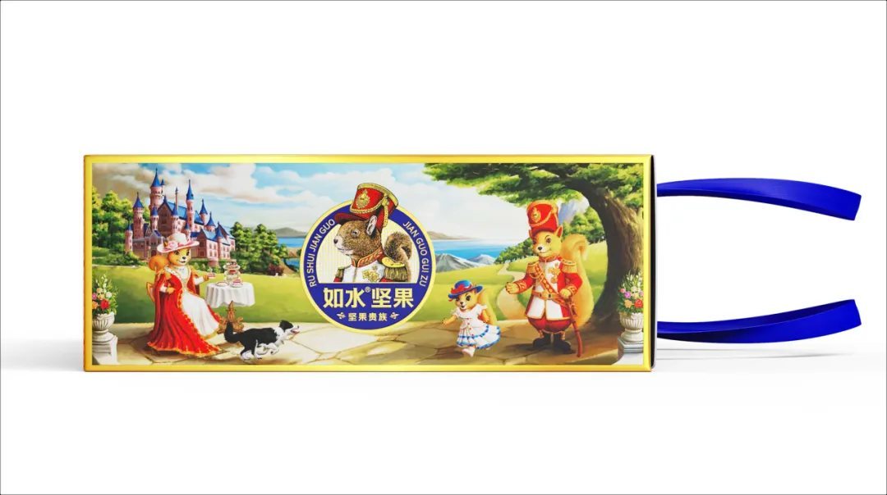
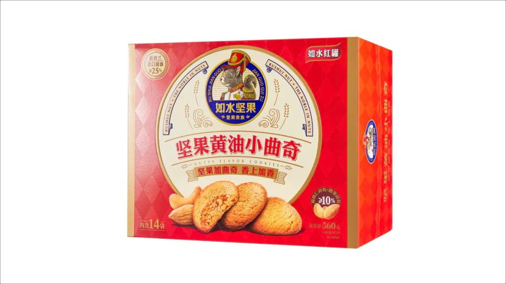
阶段 4
进军礼品渠道，建立第二增长曲线

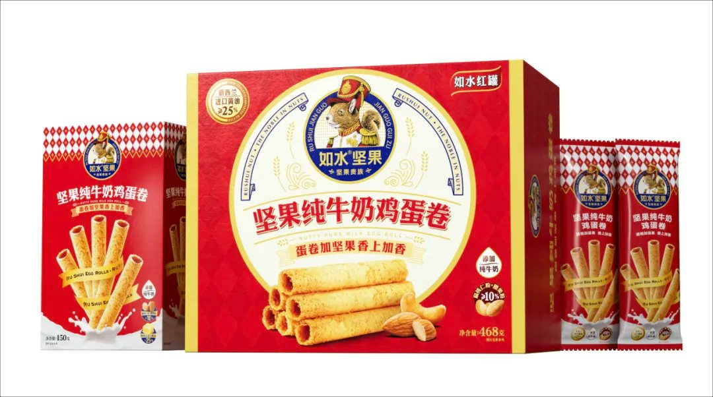
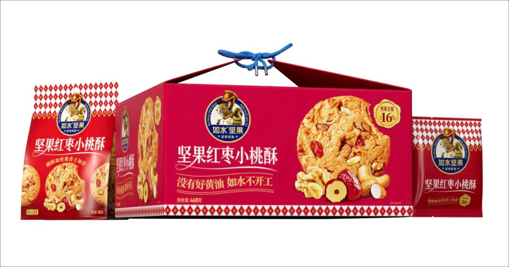
进军礼品渠道拉出品牌第二增长曲线对于高端品牌有个更大的市场就是礼品市场， 2022 中国礼品市场预计突破 1 . 2 万亿，全球排名第一。如水坚果有天然高端坚果送礼属性，但礼品渠道开拓的壁垒比较高，靠传统的直营模式已经很难打通。经过调研我们发现，礼品渠道的核心在于撬动礼品经销渠道的能力。开拓礼品经销渠道，便是服务如水项目的又一大亮点工程。这里面我们涉及到营销 4P 中的渠道。渠道是什么？渠道不仅仅是利益共同体，而是一个组织共同体。我们不仅从营销理论来看渠道，我们更要从组织行为学来看渠道。对企业来说渠道是一个体制外但又是结构内的组织。既然是一个组织，他就要有愿景、有价值观、有制度、有仪式、有组织生活。而我们也要帮助如水，为组织共同体打造盈利的产品，渠道的制度以及共同的生活节拍。完善产品结构 助力经销商卖货我们要开始研究产品结构的时候发现一个问题，就是产品缺位的问题，整个春节只有 11款产品。第一个， 100 元以下的产品是一个很大的市场，但我们在这个价位段上面的产品不足。第二个，中国有三大节日的礼品市场，端午、中秋、春节。除了这三大节日，平时我们的经销商也要有货可卖，目前的产品无法为经销商提供充足的弹药。2021 - 2023 两年时间内，从 11 款礼盒到 35 款，完善春节产品的价格带梯队，开发了 5大系列 16 大产品， 50 元- 1600 元，各个价格带上都有非常丰富的选择，可以让经销商和顾客根据自己的渠道，自己的需求，来选择更加适合的产品进行销售。
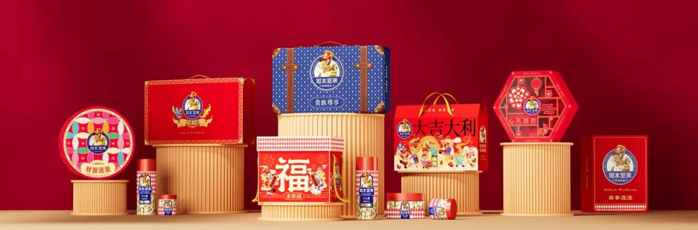
第二，覆盖全年销售场景。我们持续完善中秋礼盒、端午的礼盒，今年也是打造出了 6款能够畅销全年的经典礼盒。不仅如此，我们在品种上还继续深化和开拓，开发了烘培类坚果礼盒和每日坚果礼盒，形成了高端坚果礼品完整的产品结构。让经销商全年卖如水，增强了经销商对如水的依赖程度。
用包装设计打造超级礼盒，实现全自动销售如水作为高端的礼品，它最重要的是什么？最重要的就是包装。送礼就要有面子，所以设计礼品包装就是设计送礼和收礼的人的面子，包装是把我的一颗心包给你。所以如水是心意，如水的包装就是送礼的面子。
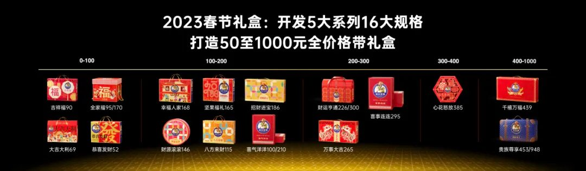
正因如此我们的包装和其他所有的包装都不一样，因为其他的坚果品牌都是基于快消的思维，他们也确实是快销的这个模式。我们是精细化思维，做的更精致，我们要走一条自己很独特的道路。每年的礼盒不管在设计上还是在工艺上面都下很大的功夫， 2022 年如水【全家福】礼盒改造后，销售额增长 52 . 2 % ，销售额第一名；【大吉大利】 改造后销售额增长255 %；【恭喜发财】 2022 年首次推出，拿到销量第一的好成绩；礼品市场 2022 年实现 1 . 27 亿元营收，增长率 219 %。
我们是如何用高级符号打造出高级爆品的呢？1 ）产品命名：实现全自动播传华与华创意的话语，不是设计一句话来告诉消费者，而是要设计一句话让消费者帮我去传。我们做产品命名也是一样的，首先我们在卖货的时候，思考促销员愿不愿意去说能不能说得出口。第二消费者送礼的时候，会不会说，并且会不会以此来进行传播。所以我们
要找到能够自己长翅膀自由飞翔的词语和命名来进行产品的开发。和做超级符号是一样的，要在文化母体当中寻找，就是我们生活中循环往复的真实日常。我们的品牌和产品要寄生到文化母体当中，成为母体中的一部分，成为送礼这个母体行为中的道具。所以我们礼盒的命名，都是在文化母体当中寻找创意的。我们开发了五大系列：福系列、财系列、吉系列、喜系列和贵族系列，这就是在春节场景当中，各位都会去出了祝福语。我们在给每一个系列进行命名的时候，都是他自己能够传播我们在销售也愿意去说的话语，恭喜发财！祝你今年财源滚滚，财运亨通！都是非常有祝福意义的产品命名。

点击图片可查看大图
大家有没有意识到，如果我们取了一个非常书面很难读的命名，首先我们卖的时候就不知道怎么去说，不会去用它。第二消费者来送礼的时候，他也不会使用这个命名，所以最好的命名是什么？就叫约定成俗的命名，它本身就是经过过历史的长河，大家实践出来认同的词语，这样就能形成自动的播传和传播。2 ）包装设计：设计礼盒预制件我们说好了命名之后，讲讲如何打造礼盒产品包装，放在货架上能够自动引流，自己把自己给卖出去。这也是华与华设计所有的包装的一个原则，叫做货架思维。在我们设计每一款包装的时候，首先得思考它在哪卖，产品它不是存在在电脑中，也不是陈列在艺术馆里，而是在我们销售的终端。思考怎么让消费者一眼能看到，看到了之后怎么拿起来观赏，然后他愿意购买，愿意把它送出去。所以我们要思考的是如何让如水的产品包装能够实现货架优势，和其他的品牌放在一起，第一眼能看到如水的产品。第二能够用手艺实现价值的超配，看上去高级，送礼有面子。首先来讲讲我们的畅销爆品【全家福】礼盒，它的成功是选择了一个非常好的正方形礼盒，装配灵活。其次是内容物超值，价格也合适。如何去进行产品包装的设计，让它更有卖货的能力。
首先我们给它加上超级花边做品牌资产的积累。其次放大购买理由，既然叫全家福，是不是你送出去得像送一个福字一样把福的意愿送到别人的家里，我们真的把大大的福字放在上面。接下来我们又将我们超级角色寄生在这个产品的包装当中，松鼠公爵和公爵夫人也融入到中国春节的文化的气氛当中，拉着这个横幅站在像两个门神。我们也以此进行一系列福系列的产品设计，超级符号放大购买理由，每一款福系列的产品包装都有一个能让购买理由放大的符号。可以看到【吉祥福】我们用窗花的形式来进行设计；【坚果福礼】用中国结的形式来设计；【幸福人家】我们用松鼠公爵一家人其乐融融，我们的预制件来进行产品包装的设计。
打造如水超级道场，助力拓展经销客户开拓经销商的核心动作，就在于开展会，展会就是企业的门面，展会就是企业的派头。我们为如水打造了如水坚果城堡展厅，展厅有 5 大销售阵地 7 大机关，现在的如水展厅成了经销商到展会的必打卡点。销售总监王总和我们说：如水的经销商来参加完展会都感叹，觉得如水这两年越来越像一个高端的大品牌了！
首先为了引流，我们会安排松鼠公爵在展馆附近巡游。消费者看到可爱的松鼠公爵纷纷上前合影，在消费者心中建立起良好的品牌体验感。
走近展馆便会听到我们的品牌歌曲，轻松欢快的旋律使人心情愉悦。整首歌在不停的重复“如水坚果 坚果贵族”的品牌谚语，加深消费者对品牌的认知度，这是我们的第二大机关。
进到展馆内就可以看到我们的 5 大销售阵地，分别是：
- 门口的试吃台：产品销售的关键就在于试吃，让消费者吃到才能真正的体验到产品最核心的部分。我们也会在试吃台的下方提供信任背书“高端精品超市畅销 18 年，入驻商场超 1000 家”的信息。
- 超级堆头：货卖堆山卖货快，我们把主推的产品放在堆头上，营造热卖的氛围。堆头上也会提供购买理由“拳头产品 款款畅销” 降低决策成本。
- 产品货架：货架的关键在于食欲海报和灯光氛围，食欲海报提供产品的购买理由，灯光氛围增强包装的食欲感。
- 礼品专区：高端的礼品要用高端的陈列方式，我们专门设置礼品展示区，每款礼盒像陈列珠宝首饰一样进行展示，提升礼品的品质感。
- 洽谈区：洽谈区也是重要的销售阵地，这里面也是机关算尽。桌布采用如水的品牌花边菱形格桌布来积累品牌资产，同时也放上每个区销售经理的微信二维码、宣传册和我们的试吃产品，边吃边聊，助力成交。
如水每年在全国各地，召开 10 余场展会，打造如水贵族超级道场，渠道商来这里参观，在这里交流，共同的发展，这就是组织的关系。目前每场展会都会新增上千客户资源，两年时间助力如水从直营模式成功转为直营+经销双渠道模式，经销渠道营收增长50 %！全文总结
如水坚果，通过两年半的时间，用高级符号和话语建立起高端品牌，树立了整个企业的竞争壁垒。通过产品开发建立品牌认知，并开拓出全新烘培市场的增长机会。通过礼品市场打开了全新的事业版图，同时增长经销商渠道的管理能力。 2 年增长率保持 16 %以上 ，如水品牌已进入全新发展时代。今年我们也是帮助如水召开了 30 年来第一场经商大会，张总在台上的分享令所有经销商为之动容。通过这样一场大会，将企业家对于社会、对于员工、对于品牌、对经销商的热忱，展现的淋漓尽致。核心主旨就是道义最大！你帮我，我帮你，我们都是好兄弟。这个就是一个高端品牌掌舵人的想法，高端品牌不仅仅是高级的符号，更是企业价值观的一个展现。华与华认为，商业的本质是要与这个时代宏大的叙事相结合。在这个上面我们真正实现了让一个与宏大叙事相结合的企业散发出它全新的光芒与活力。未来如水还有更大的空间值得我们去开拓，我们希望可以一步一个脚印陪伴如水，基业长青，永远不败！